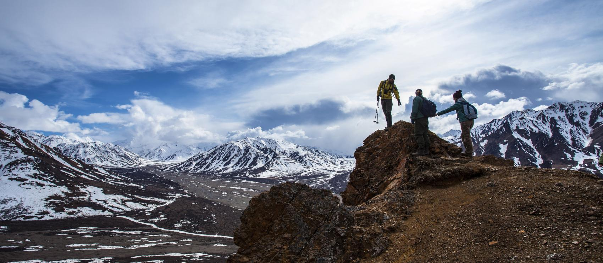
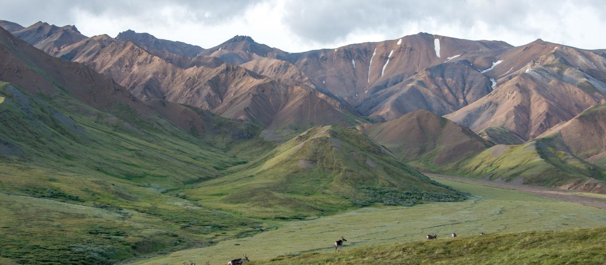
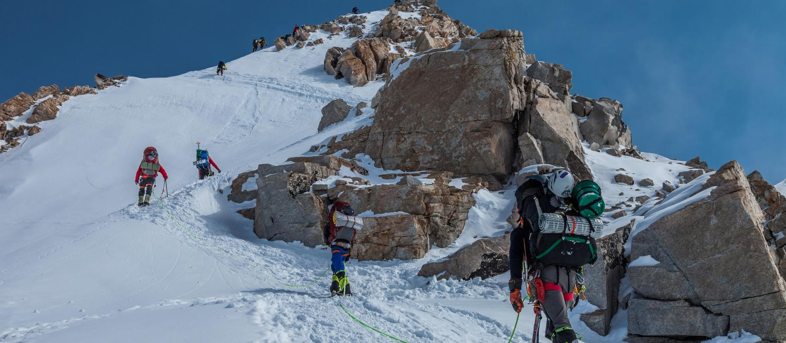
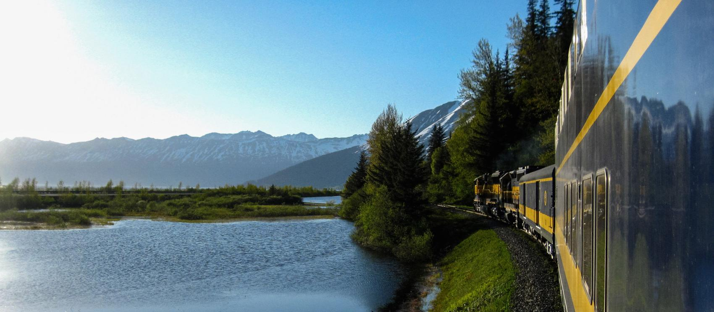
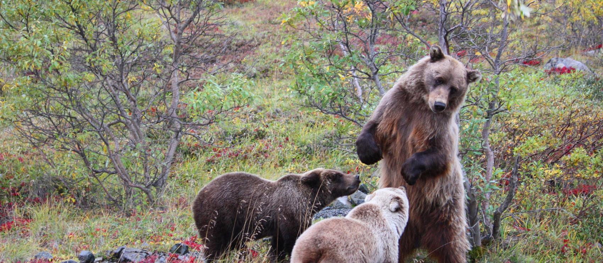
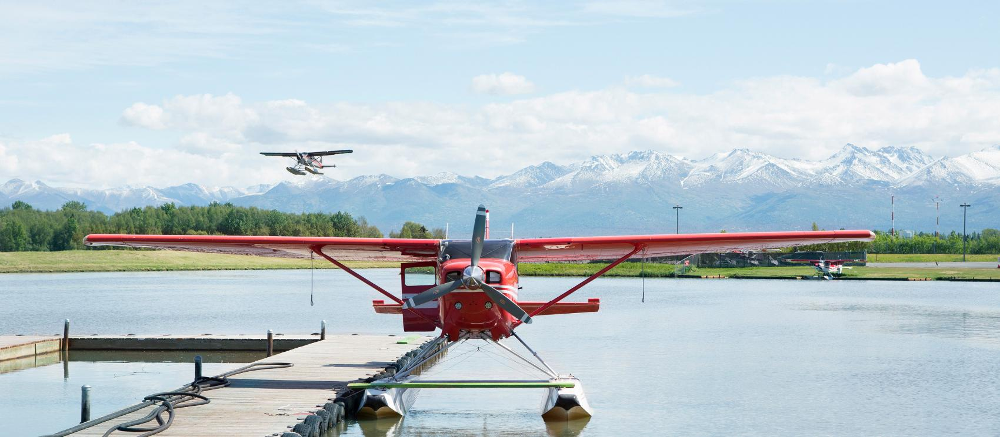
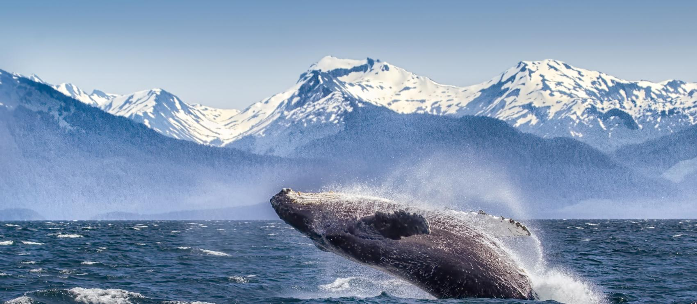
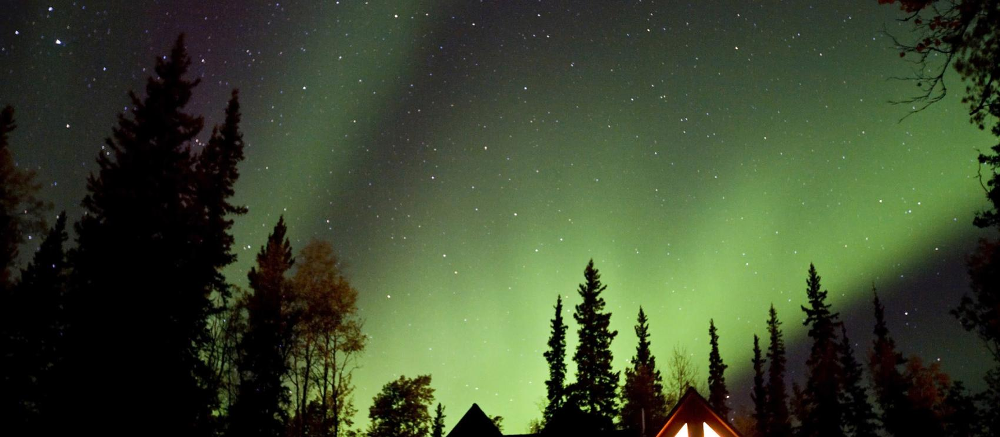

-
미국 공식 웹사이트 알레스카주

데날리 국립 공원의 하이커 -
미국 공식 웹사이트 알레스카주

데날리 국립공원을 지나고 있는 카리부 -
미국 공식 웹사이트 알레스카주

데날리 국립공원 정상 등반 -
미국 공식 웹사이트 알레스카주

앵커리지부터 휘티어까지 알래스카 철도의 빙하 탐험 열차 탑승 -
미국 공식 웹사이트 알레스카주

주 전역에서 만나볼 수 있는 회색곰 -
미국 공식 웹사이트 알레스카주

화창한 어느 날, 앵커리지의 투어 및 통근용 수상 비행기 -
미국 공식 웹사이트 알레스카주

알류샨 열도 주변 베링 해에서 고래 관찰하기 -
미국 공식 웹사이트 알레스카주

페어뱅크의 오두막 너머 보이는 북극광
 별 관측에 좋은 미국의 놀라운 장소 5곳
별 관측에 좋은 미국의 놀라운 장소 5곳
 현지인이 사랑하는 한여름 도심 축제 4선
현지인이 사랑하는 한여름 도심 축제 4선
 미국에서 스쿠버다이빙을 즐길 수 있는 놀라운 장소 10곳
미국에서 스쿠버다이빙을 즐길 수 있는 놀라운 장소 10곳
 목적지
앵커리지
목적지
앵커리지
 Travel Alaska
Travel Alaska 미국 여행 정보
미국 여행 정보